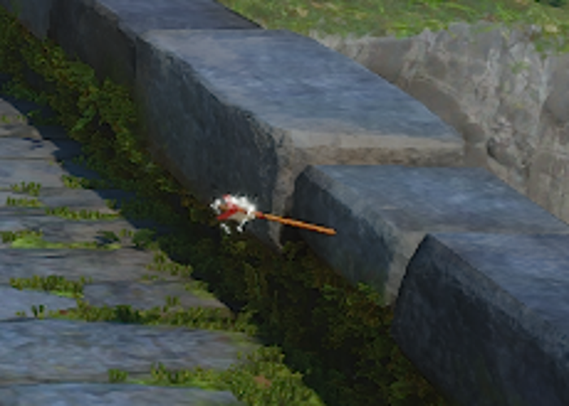

Watch videoTOTK-style Arrow Recovery
Missed normal arrows stay embedded where they land. A white sparkle marks their feathers. Walk close to recover one arrow automatically; the arrow and sparkle disappear after pickup. Elemental arrows are excluded; trees, water, full quivers and minigames still need testing.
Use the ZIP for your platform and enable only one Arrow Recovery version. Simple Arrow Recovery v1.0 remains a local test, alongside the cel-shading preview.